| プロメテウスの罠〔４７〕 不安を消せ！「でも高線量。避難すべきだった」 (朝日新聞デジタルＳＥＬＥＣＴ) | |
| 朝日新聞 | |
| (2014) | |
「心配いらん。子どもが外で遊んでおろうが......放射線なんてのは絶対打ち勝つことができる」。原発事故後、福島県の放射線健康リスク管理アドバイザーに任命された長崎大の山下俊一、高村昇両教授が語った「安全」は、県民に重大な影響を与えた。国も県も報道機関もパニック回避を優先したが、飯舘村をはじめ、事態は深刻だった。住民は専門家の言葉に安心して高線量の土地にとどまり、子どもの甲状腺がんを予防する安定ヨウ素剤も届かなかった――。日増しに明らかになる線量データと専門家の言動を子細にたどり、原発推進国の被災者に対する罪深い対応を、多くの証言とともに問う。
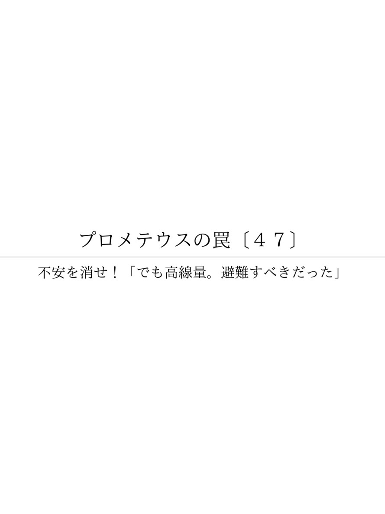
内容紹介
「心配いらん。子どもが外で遊んでおろうが......放射線なんてのは絶対打ち勝つことができる」。原発事故後、福島県の放射線健康リスク管理アドバイザーに任命された長崎大の山下俊一、高村昇両教授が語った「安全」は、県民に重大な影響を与えた。国も県も報道機関もパニック回避を優先したが、飯舘村をはじめ、事態は深刻だった。住民は専門家の言葉に安心して高線量の土地にとどまり、子どもの甲状腺がんを予防する安定ヨウ素剤も届かなかった――。日増しに明らかになる線量データと専門家の言動を子細にたどり、原発推進国の被災者に対する罪深い対応を、多くの証言とともに問う。
初出
朝日新聞 二〇一四年五月八日～五月二十四日
第１章 撤回された安全宣言
第２章 長崎の経験生かして
第３章 パニック発生を警戒
第４章 「健康上心配はない」
第５章 ３０キロ以上遠くても
第６章 ほっとした空気
第７章 住み続けて大丈夫か
第８章 「避難した方がいい」
第９章 なぜ避難させない？
第１０章 揺れたＩＡＥＡ見解
第１１章 正しく怖がって
第１２章 偉い先生が安心だと
第１３章 講師は知っていた
第１４章 「百％安全ですか？」
第１５章 １カ月後の避難指示
第１６章 「心配ない」の真意
第１７章 自分で判断し生きる
中部太平洋に浮かぶマーシャル諸島共和国。その首都マジュロで２０１４年３月１日、ビキニ環礁での史上最大級の水爆実験「ブラボー」から６０年を記念する式典が開かれた。
強烈な日差し。暑い。
来賓の米国務次官（軍備管理担当）があいさつした。
「マーシャル諸島の世界平和への貢献に敬意を表します」
式典後、ビキニ自治体の前首長、アルソン・ケレン（４６）に会った。
「ビキニに帰ることを止められているわけではありません。しかし、帰る人はいません」
１９４６年７月、戦後初の核実験を前にビキニ島民は別の環礁に避難させられた。５４年のブラボーでは周辺住民や、日本の漁船「第五福竜丸」など延べ１千隻が被曝（ひばく）した。
ケレンの両親はビキニ出身。自身は６８年、クワジェリン環礁で生まれた。米政府がビキニに安全宣言を出したのをうけて、７４年にビキニに移った。米政府の医師が３カ月に一度、ビキニを訪れた。
「彼らは安全だといいながら、ココナツは食べるな、やぶに入るな、などと指示する。米国がいう『安全』とは何なのでしょうね」
米国はこの地域で、４６年から５８年までに６７回の核実験を繰り返した。
６３年以降、子どもの甲状腺障害が、ビキニの東にあるロンゲラップ環礁などで相次いで確認される。
７８年、米国はビキニの安全宣言を撤回。住民はまた移住を強いられた。ビキニは今、作業員７人が住むだけだ。
マーシャル諸島で診療活動をしてきた米政府の医師が１４年２月、東京で講演した。環境省などが３日間にわたって開いた「放射線と甲状腺がんに関する国際ワークショップ」にその医師が参加していた。
２０年以上、島民を診てきたという医師は、それまでチェルノブイリ原発事故に関する報告が続いたことを意識してか、こう語った。
「マーシャル諸島の被曝集団の規模は、非常に小さいものです」
専門家たちから笑いがもれた。
ロンゲラップの直接被曝者は８６人、東のウトリック環礁が１６７人。チェルノブイリより規模ははるかに小さい。しかし、米国の専門家に対するマーシャルの人々の不信は決して小さくない。
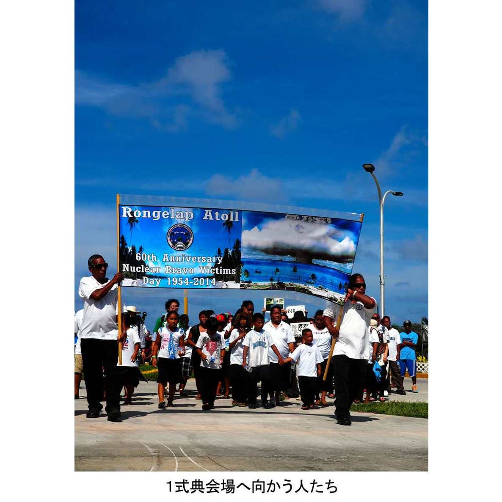
「避難されている方々の被曝（ひばく）線量は微々たるものです。私たちが来た理由は、住民の方々に安心と安全をお話ししたいということです」
２０１１年３月１８日夕、長崎大教授の山下俊一（やましたしゅんいち）（６１）は、福島市の福島県立医大で、約３００人の職員を前に、そう語った。
震災発生から１週間。山下はこの日、師弟関係にある長崎大教授、高村昇（たかむらのぼる）（４５）とともに福島県に着いたばかりだった。
「自信を持って大丈夫だ、心配いらん。子どもが外で遊んでおろうが、この子らが（将来の）日本を支えるんだと思えば、放射線なんてのは絶対打ち勝つことができると思ってます」
約２５分の講演が終わり、司会者が「まだ安心できない人、いたら手をあげて」と言った。その言い方に笑いが起きた。
１歳の子をもつという女性が質問した。
「原発でどんなことが起きたら危ないと考えたらいいのですか」
山下が答えた。
「僕も（立場が）逆だったら子どもを連れて逃げるかもしれない。これは理性（の問題）ではないんですね、感性なんですね」
福島市の放射線量は、この日、毎時１０～１２マイクロシーベルトが計測されていた。
火事の場合は目に見える。熱さを感じるし、煙は臭う。人々は危険を自分で判断できる。
しかし放射能は目に見えない。臭いもない。危険を感知できない。
避難すべきかどうか。その判断は専門家の助言なしでは難しい。山下ら専門家の存在は重要だった。
当初、政府は「念のための措置」として避難区域を拡大。一方で「ただちに人体に影響を与える数値ではない」などと繰り返してきた。
原発事故が起きた直後の３月１３日、山下は、長崎新聞のインタビューに、こう語っている。
「広島、長崎の地名が持つインパクトは大きく、それを安心安全に使いたい」（１４日付長崎新聞）
長崎での被爆者医療の経験は説得力をもつ。それを福島の人々の不安解消に役立てたいという意味だ。
しかし１３日の時点では、原発付近を除いて、各地の放射線量はほとんど公表されていなかった。それでなぜ「安心」と考えたのか。
１３年１１月下旬、山下らへの取材を長崎大学の広報担当に申し入れた。
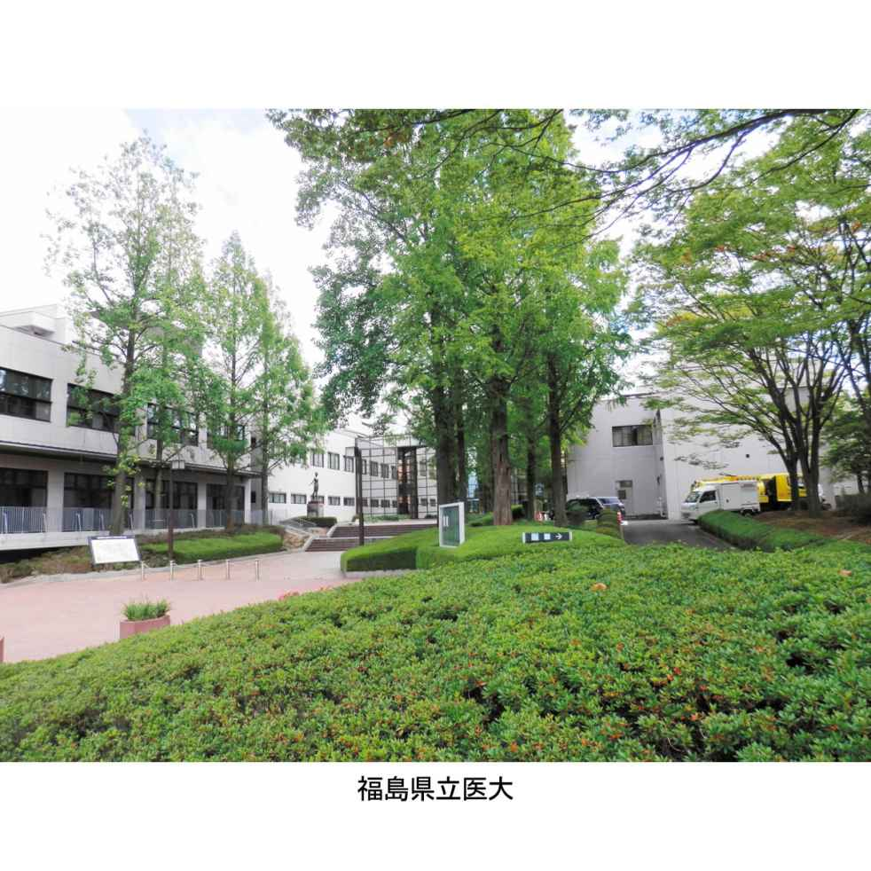
長崎大学の山下俊一（６１）と高村昇（４５）への取材申し込みに対し、大学広報は慎重な姿勢だった。
２０１３年１０月下旬、「プロメテウスの罠〔３８〕 医師、前線へ」で、山下は、安定ヨウ素剤が県民に配布されなかった経緯などを語っていた。その記事が大きな反響を呼んだ。取材の申し入れは、それからあまり時間がたっていなかった。
話し合いをへて、最終的に、質問を文書で提出し、長崎大側も文書で回答することになった。
質問はＡ４判の用紙に６枚。大きくわけて１５項目に及んだ。
疑問の一つは次の点だった。
――原発事故がどう進展するか見通せない初期段階で、住民を安心させようと考えたのはなぜか。どの程度の放射能がどう広がるか、確かな情報はなかった。
回答はこうだ。
「情報不足のなかで、さまざまなデマや間違った情報の氾濫（はんらん）が予想されました。このような状態で警戒すべきことはパニックの発生です。実際に福島に入った後は、科学的な知見や医学的な知識を伝えることで必要以上の不安を取り除くことができればと考えました」
情報がないからこそ、安心を強調したという説明だ。当時、人々を安心させたい、不安を除きたい、と考えたのは山下だけではなかった。
１１年３月１４日、朝日新聞（東京本社発行最終版、以下同じ）は、被曝（ひばく）より「むしろ住民に広がる恐怖心や不安感の方が心配」という放射線影響研究所顧問の談話を載せた。
読売新聞は３月１５日の社説で「政府は......不安解消に全力を挙げるべきだ」と主張。テレビは「健康にはただちに影響ない」と繰り返した。
線量のデータより「心配ない」というメッセージが先行した。
３月１６日、原発から約２０キロ離れた浪江町で、毎時１９５～３３０マイクロシーベルトの放射線量が測定された、と文部科学省が発表した。
このころ政府は、浪江町や、大部分が原発から３０キロ以上離れた飯舘村に線量の高い地域があることを認識していた（国会事故調査報告書）。
山下と高村は３月１９日、福島県から「放射線健康リスク管理アドバイザー」に委嘱される。
翌２０日付の地元紙「福島民友」によると、記者会見で山下は、福島第一原発から２０キロという避難指示の範囲について「広げる必要はない」と明言した。
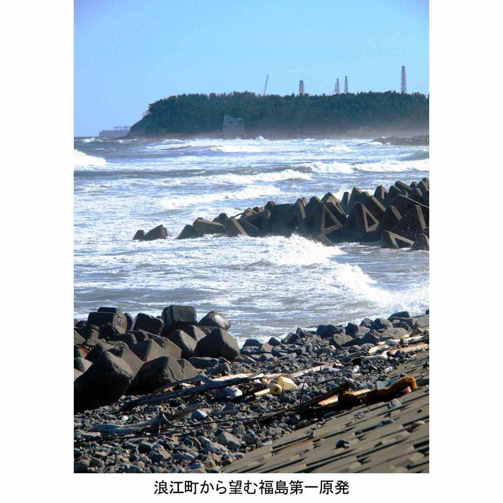
２０１１年３月１９日、文部科学省は、福島第一原発から３０キロ以上離れた福島県浪江町の一部地域で毎時１３６マイクロシーベルト、飯舘村で５９・２マイクロシーベルトという高い線量を観測したと発表した。
経済産業省の審議官は、避難区域を変更する考えはないとしながら、「あまり体に良くないので気を付けてほしい」と記者会見で話した（２０日付河北新報）。
長崎大教授の山下俊一（６１）と高村昇（４５）は２０日、いわき市で講演した。地元紙「いわき民報」（２２日付）が２人の次の発言を報じた。
「いわきは安全。気をしっかり持って生活してほしい」
「怖がることはない。これを伝えるために私たちがいわきを訪れた」
「いわき市民が踏みとどまることが、日本の安全安心につながる」
２１日、朝日新聞に山下へのインタビュー記事が載った。
「福島県内には、１００マイクロシーベルト毎時の地域が一部ある。この値だと、体内に取り込まれるのは一般的に約１０分の１なので（略）２４時間で約２４０マイクロシーベルトになる」
「これは、ヨウ素剤をのむべき基準の約２００分の１だ。ただし、影響を受けやすい乳幼児がその地域にいることは、好ましくないだろう」
毎時１００マイクロシーベルトの地域があるという情報を山下らは、県やメディアを通じて２０日までに得ていた。しかし、危険はないとの判断は動かなかった。
山下は２１日、福島市で講演した。
「なぜ国は２０キロから３０キロの人を避難させないんでしょうか。現状は危険じゃないからです。だから避難させる必要がないんです」
山下は国の方針の範囲内で発言していた。
福島県飯舘村の全職員に緊急招集がかかったのは、同じ２１日の午前６時だった。村の水道水から規制値の３倍を超える９６５ベクレルの放射性ヨウ素が検出されたのだ。
嘱託職員の鈴木保男（すずきやすお）（６０）も役場へ駆けつけた。妻はすでに２日前に埼玉県に避難していた。
雨の中、鈴木は、５００ミリリットル入りの水のペットボトルを１人あたり３本、各戸に配って回った。
水道水への対応について、２２日付福島民報に、山下の談話が載った。
「基準を超えている以上、飲むべきではないが、一年間、一リットルを飲み続けたとしても健康上の心配はない。......安心して生活を続けてほしい」
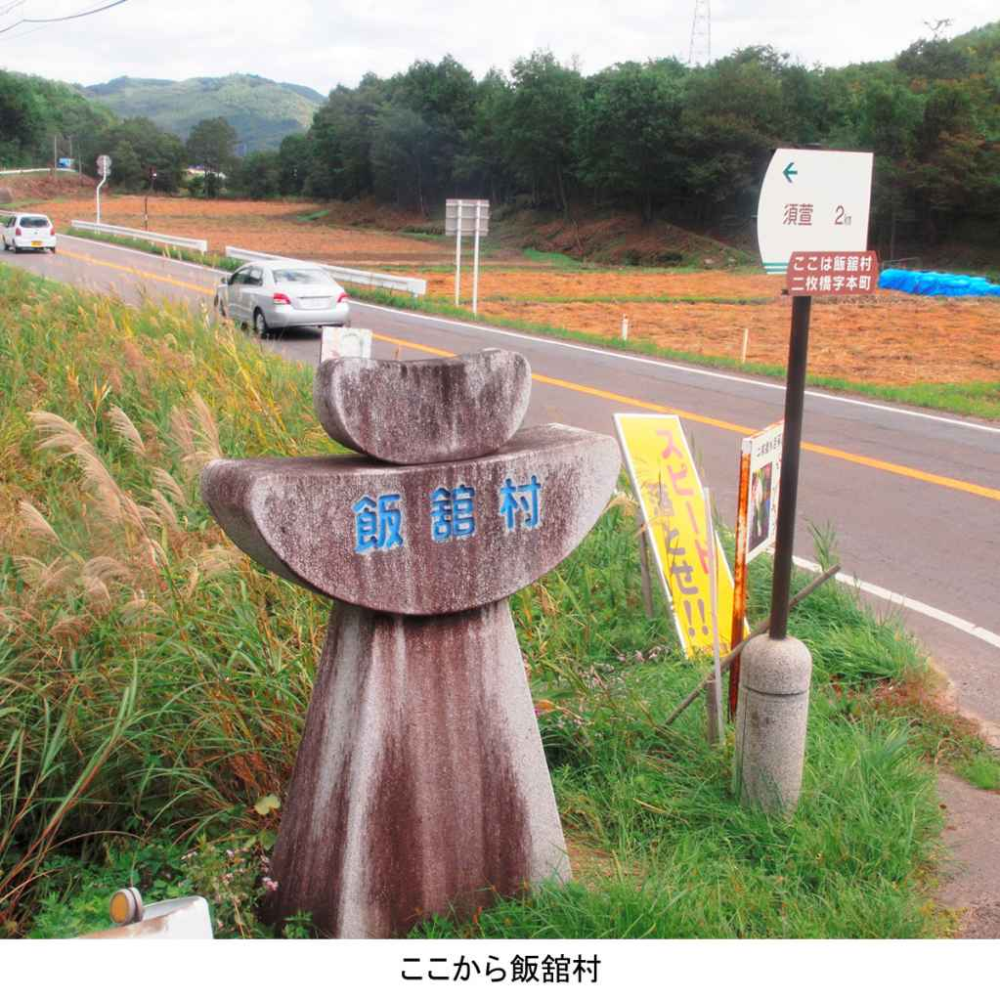
飯舘村は、福島第一原発から北西に２８～４０キロほど離れた高原の村だ。
２０１１年３月、原発事故が起きると、避難指示が出た原発周辺の住民が続々と逃れてきた。村人は握り飯をつくって迎えた。
３月１５日午後６時２０分、役場前で毎時４４・７マイクロシーベルトの放射線量が測定された。テレビが報じ、避難者が飯舘からさらに遠くへと移動を始めた。１３０５人の避難者が、２日で４３５人に減った。
１６日夕、役場の全体会議で職員から不安や不満が噴き出した。
「事故はどれぐらい危険なのか」
「避難を準備すべきではないか」
この日、環境建築家で日本大学生物資源科学部教授の糸長浩司（いとながこうじ）（６２）は、研究員の浦上健司（うらがみけんじ）（４１）、環境ジャーナリスト小澤祥司（おざわしょうじ）（５８）らとともに「飯舘村後方支援チーム」を発足させた。
糸長は１９９３年以来、自然と共生する飯舘の村づくりに参画。浦上、小澤も協力してきた。
チームは、村の広報活動を支援する。役場から、線量データや不足する物資などに関する情報提供を受け、資料にまとめた。
「災害から取り残されている小さな村の情報を、是非広く発信していただけると幸甚です」
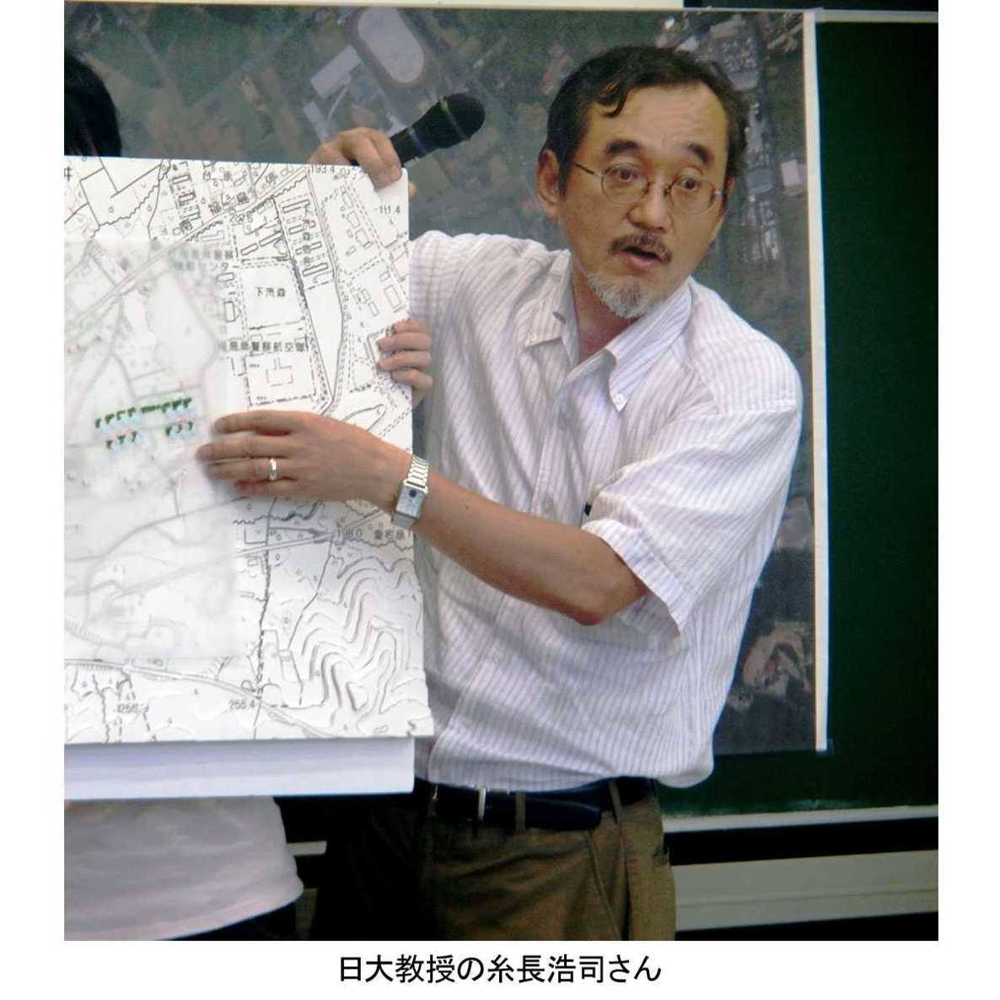
毎日、朝日や熊本日日などの各紙、共同通信、ＮＨＫ、日本テレビなど、糸長らがこれまで接触したことのある記者に個別に連絡し、報道を依頼した。
１９日、村から栃木県鹿沼市への集団避難第１陣３１４人が出発した。その夜、後方支援チームは村の幹部職員からメールを受け取った。村の南部の長泥地区で毎時５０マイクロシーベルトを計測した、とあった。
「地区の区長が、横浜ナンバー車の検査員らしき３人が測っていた、と言っています」
「値が高いので、機器の不具合か、観測地点のとり方の問題かと、別な機材で測定しましたが、同じ値でした」
脱原発を主張するＮＰＯ「原子力資料情報室」は２０日夕、ネット上に次のメッセージを掲載した。
「３０キロ以遠でも相当量の放射能が届く恐れのある地域からは、やはり避難の必要があります」
２３日、後方支援チームの浦上がバスなどを乗り継いで村に入った。
この日の夜９時すぎ、原子力安全委員会はやっと、ＳＰＥＥＤＩ（緊急時迅速放射能影響予測システム）の計算結果を公表した。
震災発生から２週間近くたった２０１１年３月２３日、スピーディの計算結果がようやく発表された。
福島第一原発から北西と南の方向に放射性物質が飛散しており、飯舘村などでは、震災後１２日間の１歳児の甲状腺内部被曝（ひばく）が１００ミリシーベルトに達する可能性がある――。
この予測を、福島民友は２５日に報じた。長崎大教授、山下俊一（６１）の談話があわせて掲載された。
「（原発から３０キロを超える）この範囲でも今後を考えて、避難勧告の対象とすべきで、被ばくしたと考えればヨウ素剤を配布すべきだろう」
一方、福島民報は前日の２４日にこのニュースを報道。同じ山下の談話を載せた。ただし、談話は「この範囲でも今後を考えて、避難勧告の対象とすべきだ」で終わっており、「ヨウ素剤を配布すべきだろう」のくだりはなかった。
山下は２４日、長崎新聞のインタビューにこう語っている。
「予想していたが、恐るべきこと。子どもや妊婦を中心に避難させるべきだ。ただし理論値であり、誤差を検証しなければならない」（２５日付長崎新聞）
この時期、山下が「避難させるべきだ」とメディアで発言したのは、確認できる範囲で、これだけだ。
２５日午後、飯舘村役場に隣接する地域活性化センター「いちばん館」で、長崎大教授、高村昇（４５）の講演会が開かれた。雪の中、約６００人が集まり、会場は満員となった。
高村が語った。
「２０キロ、３０キロ、４０キロ離れたところに強い放射線は飛んできません」
「１００ミリシーベルトの内部被曝で１千人に１人（がん死が）起こると言われています。たばこより、はるかに少ない」
「４０歳以上の人は影響を受けません。ここにいらっしゃるほとんどの人は全く心配しない方がいい。守るべきは子どもさんとお母さんです」
「こまめに（放射線量の）情報を収集して不安を解消してほしいと思います」
山下が自分の「右腕」と呼ぶ高村だが、避難については触れなかった。４０分の講演が終わり、ほっとした空気が会場に流れた。
講演を聞いた住民の一人、岡本易（おかもとやすし）（７９）は今、振り返る。
「それほど心配する必要はないんだとわかって、そのときは安心しました。長崎で被爆者の医療に従事してきた専門家だということで、ああ、それなら信頼できると」
２０１１年３月２５日、飯舘村での長崎大教授、高村昇（４５）の講演後、１人の女性が質問に立った。
「うちに６歳の子どもがいます。外で遊ぶのが大好きで、出るなと言っても出てしまう。飯舘村は水も土も汚染されてしまった。ここに住み続けて大丈夫なのですか」
村上時子（むらかみときこ）（５３）だった。
「ただちに人体に影響を与える数値ではない」という政府の説明に村上は不信を抱いていた。行政もメディアも信じられない。飯舘村に避難指示を出すよう福島県庁や文部科学省、環境省に電話で訴えてきた。
この日の講演会には、看護師をしている長女に放射線の基礎知識を教えてもらって臨んだ。
高村が答えた。
「例えば１時間なら１時間の制限つきで遊びに出すのは、ありだと思います。工夫すれば大丈夫です」
住み続けていいのか、という問いには答えがなかった。
朝日新聞はこの日、福島第一原発の事故が「レベル６」に相当することがわかったと１面で報道。飯舘村で土壌１キロあたり１６万３千ベクレルのセシウム１３７を検出したと報じ、京都大原子炉実験所助教、今中哲二（いまなかてつじ）（６３）の談話を載せた。
「飯舘村は避難が必要な汚染レベル。福島第一原発では放射能が出続けており、汚染度の高い地域はチェルノブイリ級と言っていいだろう」
飯舘の土壌汚染は１平方メートルで３２６万ベクレル。チェルノブイリでは５５万ベクレル以上の地域が強制移住の対象とされた、と記事は伝えていた。
飯舘村後方支援チームの環境ジャーナリスト小澤祥司（５８）は、記事を読んで今中に電話をかけた。今中の名は以前から知っていたが、話すのは初めてだった。
今中は事故後、各地の放射線量がほとんど公表されないことに不満を募らせていた。自分で福島に調査に入ろう。そう考えていたところへ小澤から連絡が入った。一緒に飯舘に行くことが決まった。
公害史の専門家である国学院大教授の菅井益郎（すがいますろう）（６７）、広島原爆の線量評価にあたってきた広島大教授の遠藤暁（えんどうさとる）（５０）。今中と親しい２人も参加を決めた。
福島県に向かう２８日朝、小澤はツイッターを見て驚いた。前夜、今中らと飯舘村に調査に入ることを書き込んでいたのだが、一夜でフォロワーが数百人、一気に増えていた。
「今中が動いた」――。ネット上を情報が駆け巡った。
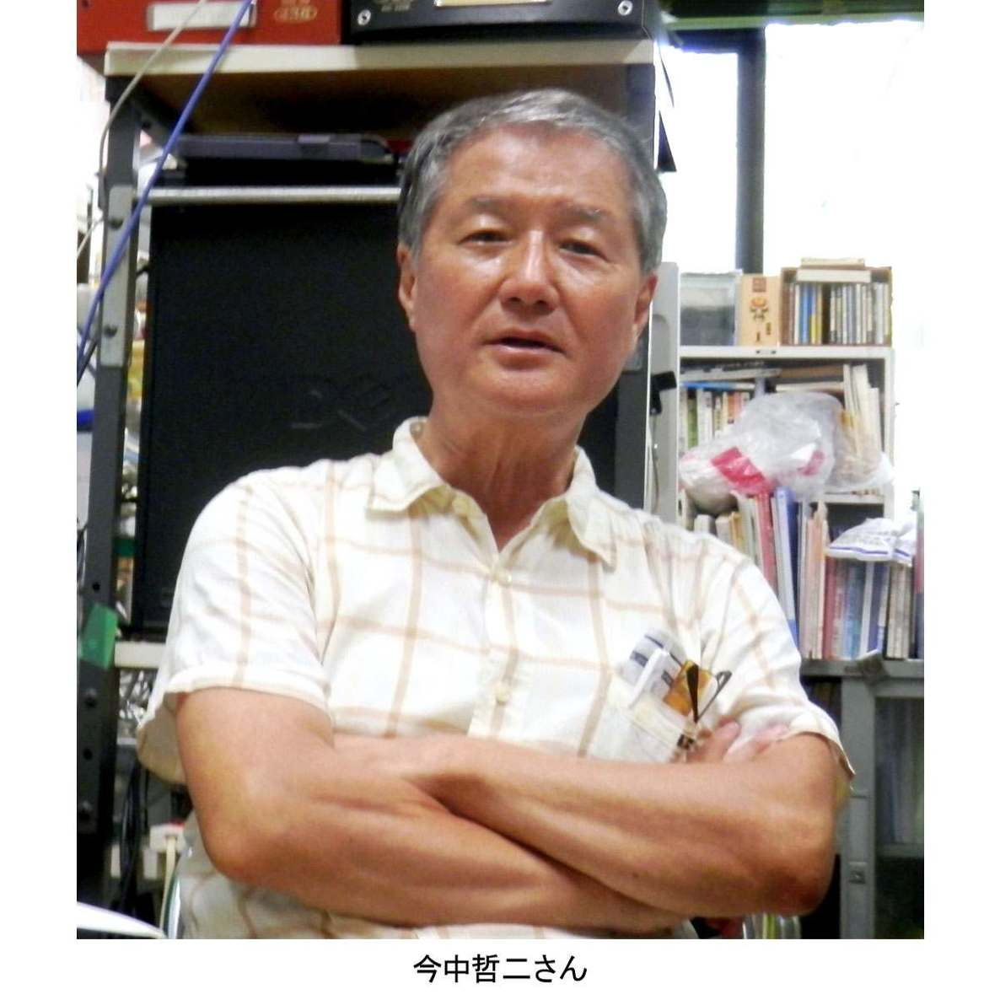
今中哲二（６３）、菅井益郎（６７）、遠藤暁（５０）、小澤祥司（５８）。４人の調査チームが車で飯舘村役場に着いたのは２０１１年３月２８日午後５時近くだった。線量計は役場前で毎時６・５マイクロシーベルトを表示した。
１時間ほど車で村内を回った。村の南部で毎時２０マイクロシーベルトまで測れる線量計が振り切れた。
今中が勤める京都大原子炉実験所では、２０マイクロシーベルト以上の場所は「高放射線量率区域」に指定され、むやみに立ち入りできない決まりになっている。それほどの線量のもとで、村人が普通に暮らしていた。
その夜、飯舘村商工会の青年部副部長（当時）、佐藤健太（さとうけんた）（３２）は、村役場のロビーに立ち寄った。同年配の知人、友人が毎晩、ここに集まって情報交換していた。
村の若者たちは、専門家や政府がしきりに安全を強調することに、しだいに不信を強めていた。そうした思いや村の様子を佐藤はツイッターで発信した。
〈飯舘村に住んでおります。放射能数値が高いにもかかわらず屋内待避の範囲にすら入らず、外で仕事を続けざるを得ない状況です〉（３月２６日）
〈土壌汚染が心配です。健康に影響が出るのは、子供達が大人になった時じゃないのか？〉（２７日）
飯舘村後方支援チームの浦上健司（４１）が役場ロビーで佐藤らに声をかけたのは２８日夜９時ごろだった。
「今、放射能の健康影響をどちらかというと厳しく見る方が飯舘に来ているんです」
「なんていう方ですか？」
「京大の今中先生という......」
「あ、ツイッターで見ました」
浦上は、役場に隣接する村の施設「までいな家」に佐藤らを案内した。今中たちは、ここで一泊することになっていた。
若者たちと今中らのチームが合流した。浦上はそのときの会話の模様をＩＣレコーダーに記録した。
今中はこう話している。
「これからどうしたらいいか、皆さんが判断するための客観的なデータをきちんと出したい」
「飯舘村がかなりの汚染を受けているのは確かです。しかし、今後どうするか、僕は判断する立場にありません。それを判断するのは行政であり、皆さんです」
「僕の親戚が住んでいたらどうするか。早く避難した方がいいと勧めます」
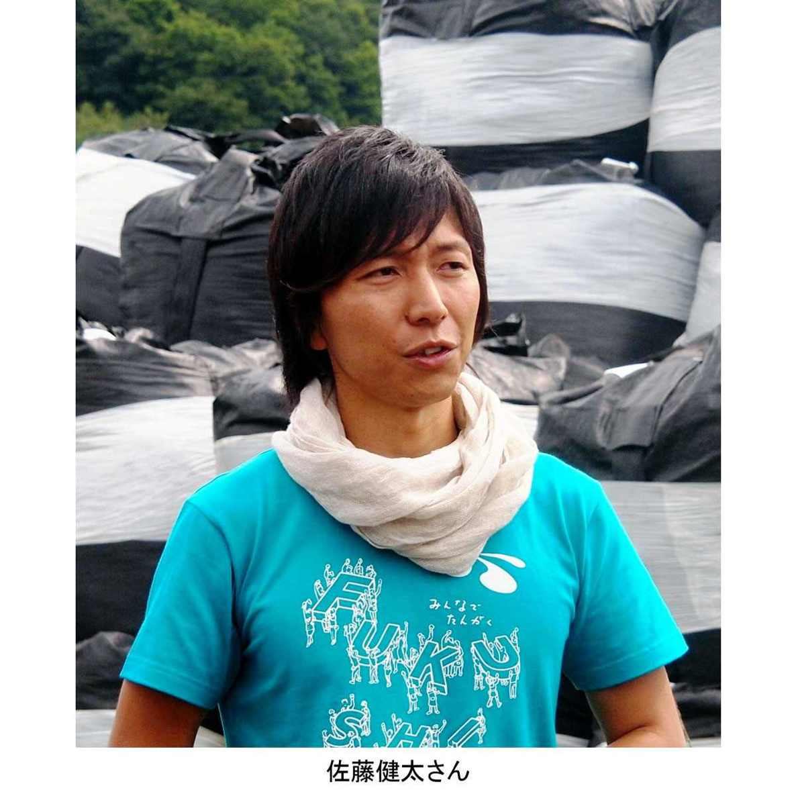
２０１１年３月２９日、今中哲二（６３）らの調査チームは午前中、飯舘村北部９２地点で放射線量を測り、午後は南部の３８地点を回った。
午後３時、今中らを乗せたワゴン車が長泥地区曲田にさしかかった。福島第一原発から約３１キロ。放射線量は車内で毎時２０マイクロシーベルト、道路上で２４マイクロシーベルト、わきの畑地で３０マイクロシーベルトを計測した。
放射線障害防止法では、３カ月（１３週）で１・３ミリシーベルト、週に４０時間立ち入るとして毎時２・５マイクロシーベルトを超える場所は「放射線管理区域」に指定される。管理区域に入るには事前の教育訓練や健康診断が義務づけられている。
「信じられない」
「現実とは思えない」
計測しながら今中が何度もそうつぶやくのを、フォトジャーナリスト豊田直巳（とよだなおみ）（５８）は聞いている。
その中で村人が暮らしていた。
長泥曲田の石材業、杉下初男（すぎしたはつお）（６４）は３月１８日、いったん千葉県成田市に避難。水が飲めるようになったとの報道を受けて、２８日に自宅に戻っていた。
長泥の線量測定地点にある掲示板に、日々の推移を書いた紙が張り出されていた。
２６日２６マイクロシーベルト
２７日２０マイクロシーベルト
２８日２５マイクロシーベルト
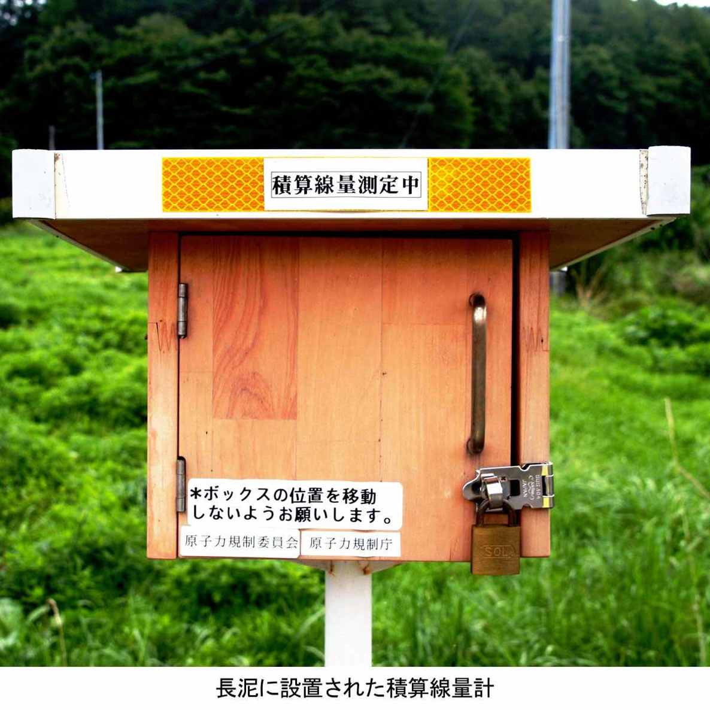
当時、飯舘村は、住民約６１００人のうち約４千人が村に残っていた。長泥地区にも、補償のめどが立たないため動くに動けない農家や酪農家が多くいた。杉下のように、いったん避難しながら戻った住民もおり、幼児を連れた親の姿もあった。
杉下は２８日夜、県の災害対策本部に電話をかけた。
「なぜこの状態で避難させないのか。どうしても納得できない」
約１時間、強い口調で訴えた。
２９日朝、福島民友が浪江町赤宇木（あこうぎ）、飯舘村長泥などで極めて高い放射線量が計測されていることを初めて報じた。
４日間の積算線量が赤宇木で４８１３マイクロシーベルト、長泥で２９５０マイクロシーベルト。
ただし、２面最下段のベタ記事だった。福島民報は４月６日に初めて長泥の線量を報じた。
今中らは３月２９日夕、調査の概要を村長に報告し、村を離れた。翌３０日、国際原子力機関（ＩＡＥＡ）は、飯舘村の土壌から同機関の避難基準の２倍にあたる放射性物質が検出されたと発表した。
２０１１年３月３０日、国際原子力機関（ＩＡＥＡ）は、飯舘村の土壌から、１平方メートルあたり２００万ベクレルを超える放射性物質を検出、ＩＡＥＡの避難基準の２倍に相当する値だと発表した。
これを受けて原子力安全・保安院の幹部が翌３１日、飯舘村を訪れた。しかし彼らは、ただちに避難する必要はないと村長らに説明した。
福島県の災害対策本部も「村の放射線は健康に問題のある数値ではない」と従来の見解を繰り返した。
この日、フォトジャーナリストの森住卓（もりずみたかし）（６３）は、飯舘村南部の長泥地区に入った。旧ソ連の核実験場だったセミパラチンスクやチェルノブイリ原発周辺など「放射能の現場」を長年、取材してきた。
森住は、放射線量の測定地点（長泥十文字）近くで、雨どいの下の線量を測った。「毎時１１００マイクロシーベルト」が表示された。
驚いた森住は、通りかかった男性に声をかけた。
男性は地元の酪農家、田中一正（たなかかずまさ）（４３）。地区の集会所でカップ麺などの救援物資を受け取り、家に戻る途中だった。
「１ミリシーベルトもありますよ」
「そうなんですか......」
田中は、その数字を聞いてもピンとこなかった。長泥に入植して９年半。牛４５頭を飼育していた。
田中の牧場は福島第一原発から約３１キロ。屋内退避区域に近く、線量が高いだろうことは察していた。
「牧場を経営していれば、何ミリだろうが何マイクロだろうが、生活は変わらないです。牛に餌をやって、乳を搾って......。危ないとわかっても、牛をおいてすぐに逃げるわけにはいきませんでした」
その後、森住は田中の牧場に通って取材を重ねた。
「本当にここは危ないのか」
田中に聞かれて森住は答えた。
「ここには住めないでしょう」
３月３１日、ＩＡＥＡは、飯舘村の土壌汚染について、（１）２００万ベクレルは誤りで正しくは２千万ベクレル（２）放射性物質は半減期が約８日と短いヨウ素１３１だった――と述べた。
しかし翌日になってＩＡＥＡは、村内の土壌１５サンプルの平均値では１平方メートルあたり７００万ベクレルであり、ＩＡＥＡの避難基準１千万ベクレルを下回っていたと発表した。
国際機関の見解は、危険と安全の間で揺れた。
４月１日、長崎大教授の山下俊一（６１）が飯舘に入った。
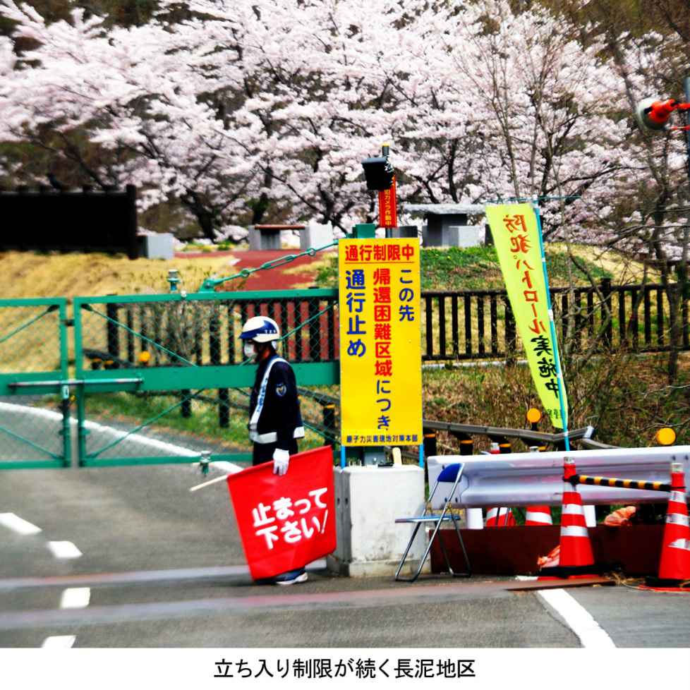
２０１１年４月１日、長崎大教授の山下俊一（６１）が飯舘村役場を訪れた。
役場前ではこの日、毎時７マイクロシーベルト台、村の南部の長泥地区では２０マイクロシーベルト前後の放射線量が計測された。山下は、福島県からの情報提供と報道で、そうしたデータを把握していた。
村の幹部や村議らを対象に、役場で説明会が開かれた。ある職員が山下の発言を詳細に書きとめていた。
山下はこう話した。
「今の飯舘村の放射線量では外部被曝（ひばく）は問題ない。内部被曝が問題だが、がんのリスクが上がるのは年間１００ミリシーベルト以上。それ未満ならリスクはゼロと考えてよい」
妊婦や子どもにはどんな対策を講ずればよいか、との質問が出た。
山下は次のように答える。
「妊婦は安全なところへ避難された方が、精神的なケアも含めて考えると望ましい。しかし、年配の男性なら、ここで頑張ろうという人がいても、それはそれでよいと思う」
スピーディの計算結果が３月２３日に公表されたあと、山下は、原発から３０キロ以遠であっても「今後を考えて、避難勧告の対象とすべきだ」（２４日付福島民報）と語っていた。
飯舘村に来たのに、なぜ避難を勧めなかったのか。
長崎大の広報を通じて、山下から文書で次の回答があった（要旨）。
「数日そこにいるだけで公衆被曝が１００ミリシーベルトを超すと予想される緊急事態では、絶対に避難しなければならない。福島県内での講演では、１００ミリシーベルトより被曝量が小さければ影響はほとんど現れないことを伝え、冷静な対応を呼びかけた」
「住民が不安に思うのは当然で、避難したい人まで引き留めるつもりはなかった。ただ、住み慣れた場所を離れること自体が大きなストレスになるので、地域ごとの被曝線量を勘案しつつ、みなさんにリスクがわかるよう説明した。基本的に守るべきは女性と子どもだと考えた。そのことは繰り返し説明した」
「飯舘村では、子どもや妊産婦の避難についてふれたが、現地で頑張る意気込みを支持する意味で、『年配の男性は心配いらない』と話した。避難指示は政府が出すべきだと思い、そこまでは言及しなかった」
飯舘村を訪れた４月１日の夜、山下はＮＨＫのニュース番組で語った。「不安を感じるのは理解できるが、正しく怖がって」
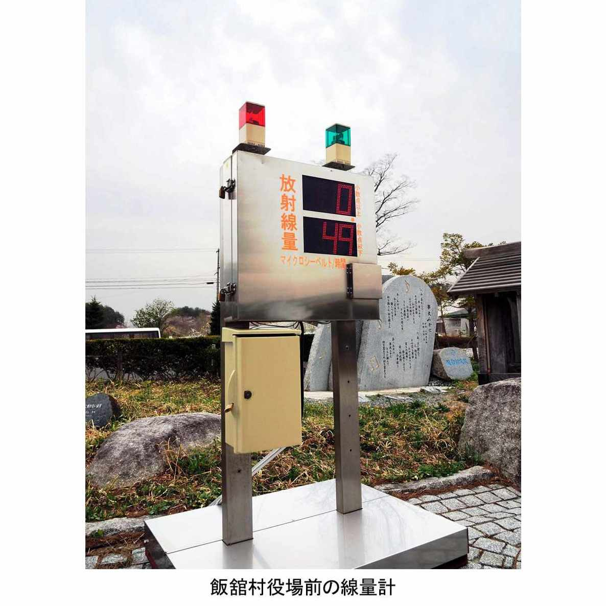
２０１１年３月２５日の高村昇（４５）の講演会と、４月１日の山下俊一（６１）の説明会。２人の長崎大教授が飯舘村で語ったあと、「放射能は心配に及ばない」という雰囲気が村内に広がった。
いったんは村外に避難した住民の一部が、専門家がそう言うなら、と村に戻ってきた。
村の商工会の青年部副部長（当時）、佐藤健太（３２）はこのころ、ツイッターにこう書き込んでいる。
「村民は疲弊している。......村民は弱い。その弱さにつけ込んで一方的に安心を押しうる国や県の誘導に、心地よさを求めている」
４月３日、村の南部、長泥地区の酪農家、田中一正（４３）を、酪農家仲間の長谷川健一（はせがわけんいち）（６０）が訪ねてきた。田中は、長泥の雨どいの下で数日前、線量が毎時１１００マイクロシーベルトに達したことを話した。
周りでは子どもが遊んでいた。
驚いた長谷川は、車で村役場に駆けつけた。居合わせた村議に「なんで住民を避難させねえんだ！」と怒鳴った。村議が答えた。
「だって、偉い先生が安心だって言ってっから......」
翌４日、京都大原子炉実験所の今中哲二（６３）らの調査チームが飯舘村での活動報告をネット上に公開した。３月１５日から９０日間の積算被曝（ひばく）量は、長泥曲田で９５ミリシーベルト、村役場で３０ミリシーベルトと予測された。国が避難の基準として検討していた年間２０ミリシーベルトを超えていた。
飯舘村後方支援チーム（代表＝日大教授・糸長浩司）は４月４日、線量が高い地区の住民を村内外に避難させることなどを村に提案した。
２日後の６日、高村昇が長泥で放射線の影響について講演した。長泥では毎時２０マイクロシーベルト前後の中で２００人余りが暮らしていた。
高村は、村が３歳未満の乳幼児と保護者、妊産婦の希望者を福島市に一時避難させる方針であることを、事前に聞いていた。
当時は飯舘村全域に乳幼児約１００人、妊婦約１０人が残っていた。
「お子さんと若いお母さんは、少し長泥地区を離れてみた方がいいかもしれません」
講演で高村はそうした趣旨のことを語った。
この日、飯舘村の教育長、広瀬要人（ひろせかなめ）（６７）は、文部科学省の総括審議官から電話で、こう告げられた。
「飯舘村が避難区域になるかもしれません」
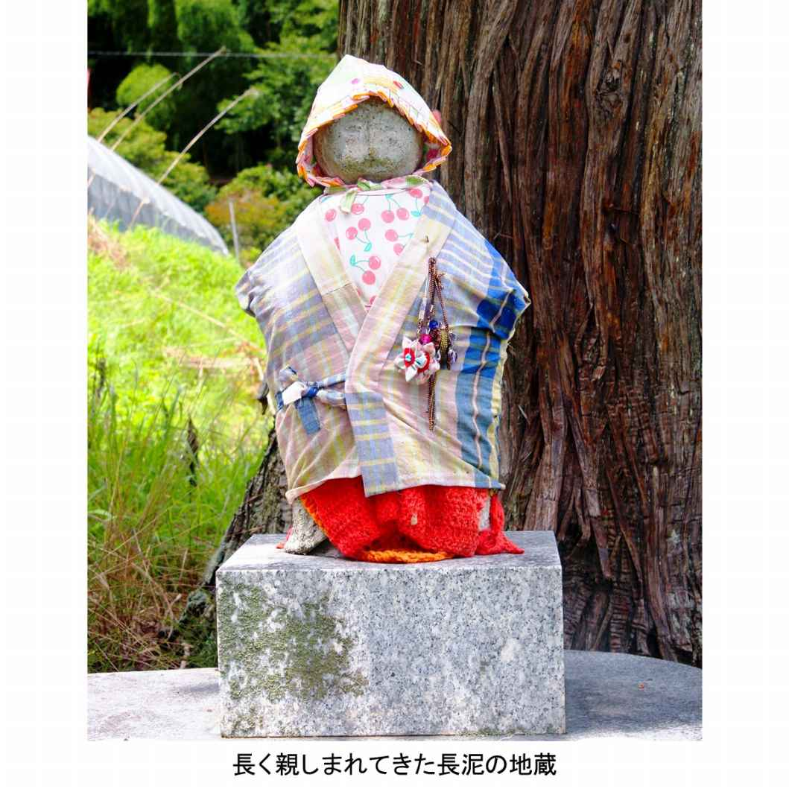
近畿大教授（当時）の杉浦紳之（すぎうらのぶゆき）（５２）が福島県に入ったのは、２０１１年３月２３日前後。スピーディの計算結果が発表されて、放射能の広がりが明らかになったころだった。
東京大医学部出身で専門は放射線防護学。政府の放射線アドバイザーに委嘱され、放射能の健康影響について住民に説明することになった。
知事室にあいさつに訪れると、先客がいた。長崎大教授の山下俊一（６１）だった。しかし講演内容などについて、山下と打ち合わせをすることはなかった。
杉浦はその後、地元のテレビやラジオにも出演して放射線の基礎知識を語った。
４月８日、朝日新聞は１面で、京都大原子炉実験所の今中哲二（６３）らの調査グループが、３月１５日から３カ月間の飯舘村の積算放射線量を９５～３０ミリシーベルトと試算したことを報じた。
記事は「１年後の積算量は約２２０～７０ミリシーベルトに上る可能性」があると述べていた。
記事が出て２日後の４月１０日、杉浦は飯舘村を訪れる。講演会場の飯舘中学体育館には、約３００人の住民が詰めかけた。
村の南部の長泥地区ではこの日、毎時１８・７マイクロシーベルトが計測されていた。
飯舘の線量を杉浦は「決して低くない」とみていた。一方で「避難の条件が整うならそれも一つの判断だが、あわてて避難するレベルではない」とも考えていた。妊婦や乳幼児についても同じ判断だった。
講演では、村に住み続けるにはどんな工夫をすればいいか説明した。
杉浦は、同行の原子力安全・保安院職員から、飯舘村が近く避難区域に指定されることを講演前に聞いていた。しかし、講演ではその点に触れなかった。
この日の夕方、内閣官房副長官の福山哲郎（５２）が福島市内で飯舘村長と会った。福山は、飯舘村を「計画的避難区域」に指定する方針であることを伝える。政府はこの方針を翌１１日、報道機関に発表した。
いま、杉浦は言う。
「発表前日に講演会が設定されていたのが不運でした。政府の一員という立場では、正式決定や公式発表の前に、私の口から、もうすぐ避難指示が出ます、と住民の皆さんに話すわけにはいきませんでした」
杉浦の講演が終わって、質疑応答が始まった。一人の若者が立ち上がった。
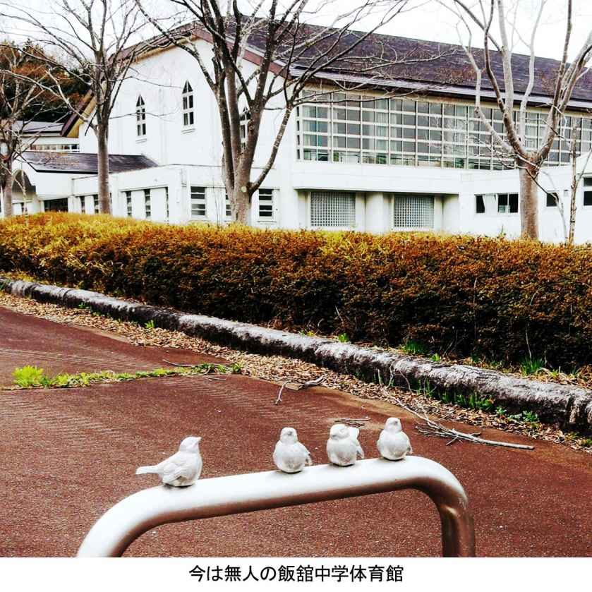
２０１１年４月１０日午後、飯舘中学での講演会に集まった住民の中に、村の商工会の青年部副部長（当時）、佐藤健太（３２）がいた。
政府の放射線アドバイザー杉浦紳之（のぶゆき）（５２）の講演が終わり、佐藤が質問に立った。
「今のこの状況で、百％安全であると言えますか？」
強い口調だった。
続いて、農家の菅野慎吾（かんのしんご）（３０）が立ちあがった。
「放射線のレベルは安全だというが、土壌は汚染されている。子どもが遊んでいて土を口に入れるかもしれない。危険なら危険とはっきり言ってほしい」
菅野はその年の１月、友人に誘われ、福島第一原発で３カ月の期間工として働き始めた。最初に放射線について講習をうけた。
その後、発電に使った水をためておくための地下のタンクを１５人ほどのチームで点検する作業についた。
作業中、線量が上がると、体につけた線量計が「キュイ、キュイ、キュイ」と音を立て、やがて「ピピピピピ」という警告音に変わった。
１日２、３時間の作業で、被曝（ひばく）線量は１００マイクロシーベルトから、多い日で８００マイクロシーベルトに達した。
３月１１日、菅野は３週間ぶりに休みを取った。午後、大地震が起きる。翌朝、妻子を二本松市に避難させた。原発には戻らなかった。
菅野は自宅に線量計を持っていた。雨どいの下で測ると、１００～２００マイクロシーベルトに達することもあった。住民を避難させるべきだ、と何度か村議にかけ合った。
しかし、村の独自の判断で避難させたら補償が受けられないおそれがある、とはね返された。
杉浦の講演会が近づいた４月上旬、菅野の家に佐藤ら４、５人の仲間が集まった。
それまで村に来た専門家は「飯舘は安全です、安心して下さい」と繰り返してきた。それがかえって菅野らの不安をかき立てた。避難を押しとどめようとしているのではないか、とも感じられた。
「今度の講師も同じことを言うようなら、質問をぶつけよう」
菅野、佐藤らは、何を質問するか分担して１０日の講演会に臨んだ。
杉浦は、こうした事実を知るよしもない。講演会のあと、高齢の女性が杉浦に近づいてきて言った。
「外で農作業をするなと夫に言われていたが、放射能は怖くないことがよくわかりました」
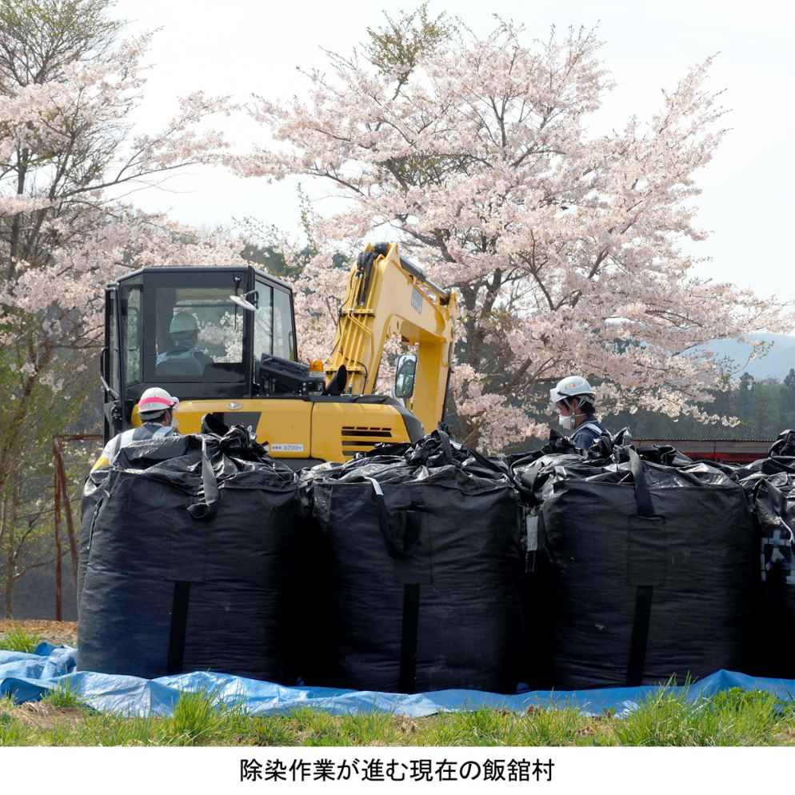
２０１１年４月１１日、政府は、福島第一原発から２０キロ圏外の一部地域を「計画的避難区域」に指定すると発表した。
事故発生から１年間の積算放射線量が２０ミリシーベルトに達する恐れのある地域が対象で、飯舘村は全域が指定されることになった。
避難区域の住民は、１カ月ほどの準備期間ののち、域外に避難することになった。福島市の南部にある県立医大の屋外洋弓場では１１日、雨どいの下で毎時３０マイクロシーベルトが計測された。
「話が違うじゃないか」
全村避難を報道で知った岡本易（やすし）（７９）は思った。３月２５日の講演を聞き、「長崎の被爆者医療の専門家がいうのだから間違いない」と安心していた。
東京都日野市から飯舘村に移り住んで２２年。妻の葉子（のぶこ）（７５）と２人で長く養鶏業を営んだ。事故までの６年間は毎週１回、村の高齢者にボランティアで弁当を配達してきた。
６月上旬、福島市に避難。いま岡本は東京電力を相手取り、慰謝料の支払いを求める裁判の原告団長を務める。飯舘村、浪江町、川俣町から避難した１３世帯３７人の代表だ。
全村避難のニュースをテレビで見た飯舘村在住の青木達也（あおきたつや）（４０）は、１６年間勤めた鋳物工場に、その日、辞表を出した。
子どもが３人おり、避難するかどうか思い悩んできた。しかし、補償がどうなるかわからず、動くに動けなかった。妻には帰宅後に初めて辞表提出を伝えた。
飯舘は危ない。青木がそう感じたのは３月１８日、栃木県鹿沼市への集団避難に関する村の説明会に参加したときだった。
「この辺はどういう状況なのか」
住民の質問に、村職員が答えた。
「よくわかりません。でも、命の方が大事ですから......」
その晩、福島県伊達市に避難し、２４日に自宅に戻った。
その後、青木は毎晩、寝る間も惜しんでインターネットで情報を集めた。放射能の健康影響は個人差が大きいこと、核実験や原発事故の被害者は、世界中どこでも、ほとんど満足に救済されていないこと......。
一方で青木は、専門家の話を聞いた村人たちが「心配することはないらしいよ」と話すのを耳にした。
６月１日、青木は家族ともども広島市に引っ越した。１年間、農業研修を受けたあと、農場経営者として再出発した。
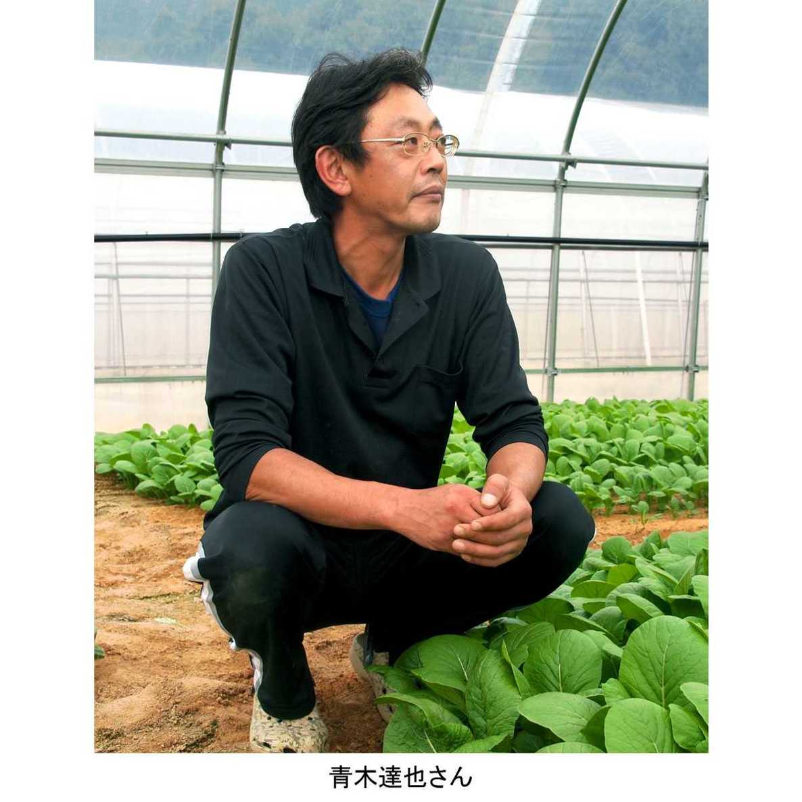
「１００ミリシーベルト以下なら心配ない」「微量でも被曝（ひばく）すれば危ないというのは間違いです」――
長崎大教授の山下俊一（６１）は原発事故の発生当初、そうした発言を繰り返した。その真意を山下は、文書で次のように説明する（要旨）。
「発言の趣旨は『１００ミリシーベルトまで許容しましょう』ということではなく、『健康に障害の現れる可能性のある１００ミリシーベルトまで被ばくしていないのだから過度な不安を抱かず、正しく怖がってください』というものです」
しかし、震災前の２００８年９月、長崎県で開かれた日本臨床内科医学会で山下はこう述べていた。
「主として２０歳未満の人たちで、過剰な放射線を被ばくすると、１０～１００ｍＳｖ（ミリシーベルト）の間で発がんが起こりうるというリスクを否定できません」（日本臨床内科医会会誌０９年３月号）
これはどう考えればいいのか。
山下は、学会で専門家に不要な放射線利用を避けるよう警告した発言と、一般向けの発言では、その「対象と説明の視座が異なる」と回答した。一般向けの場合、不安を招かぬよう配慮が必要になるとの趣旨だ。
こうした放射線の健康影響の「語り方」については、１３年１２月に東大で開かれた日本生命倫理学会年次大会でも取り上げられた。
「臨床の現場では、患者の安心のため、すべてを伝えないこともあり得るのではないか」
そうした趣旨の哲学者の発言に対し、会場からは「個人の患者を相手に反応を見ながら語る場合と、不特定多数の集団に語る場合とを同列に論じることはできない」「どのようなときも事実そのものを伝えることが大事だ」といった声があがった。
環境省などが１４年２月、東京で開いた「放射線と甲状腺がんに関する国際ワークショップ」。記者会見で山下は次の質問を受けた。
「今でも１００ミリシーベルト以下は安全だとお考えでしょうか」
山下が答えた。
「これは一度の被曝で１００ミリシーベルトの意味です。当初は、非常事態だったので安全か安全でないか、白黒はっきり発言しました。本来は国がすべき発言でした」
「発がんリスクが増えるのは年間１００ミリシーベルト以上だが、１００ミリシーベルトの環境下に住み続けていいということはあり得ない。それが伝わっていなかったことは非常に申し訳ないと思う」
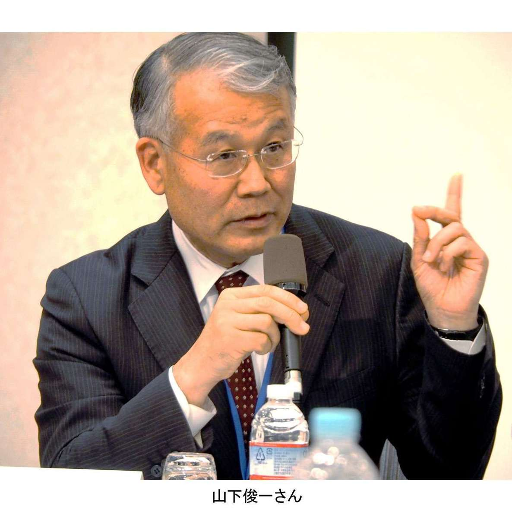
「いくらもがいても、泣いても、原発から出てしまった放射能には勝てません。悔しさで胸が裂けそうな毎日を送っております」
菅野栄子（かんのえいこ）（７８）の切々と語る声が、東大農学部の講堂に響いた。
２０１３年３月３０日。飯舘村の支援と調査にあたってきた糸長浩司（６２）、今中哲二（６３）らのグループ「飯舘村放射能エコロジー研究会」が開いたシンポジウムでのことだ。
菅野は、生まれ故郷の飯舘村で３人の子を育てながら、７０歳まで酪農を営んだ。夫の栄夫（ひでお）は震災の前年に死去。震災後は伊達市の仮設住宅に１人で暮らす。
東京には頼まれて「恐る恐る」やって来た。「語り尽くせぬものを語るのが、原発事故に遭った自分たちの使命かもしれない」と考えて。
菅野は、こう話した。
「放射能に侵されても、山河の姿は変わりません。村の自然は人々が戻るのを待ちわびています」
「人は自然を求めて生きるものです。たとえ私たちの子孫が帰れなくても、いつの日か、日本の誰かが飯舘に行って家をつくり、家庭をつくり、集落をつくれば、そのとき飯舘は再生する。そのことを望んで、私は一生を終えたいと思っています」
笑顔で語り終えると、聴衆から拍手が起きた。
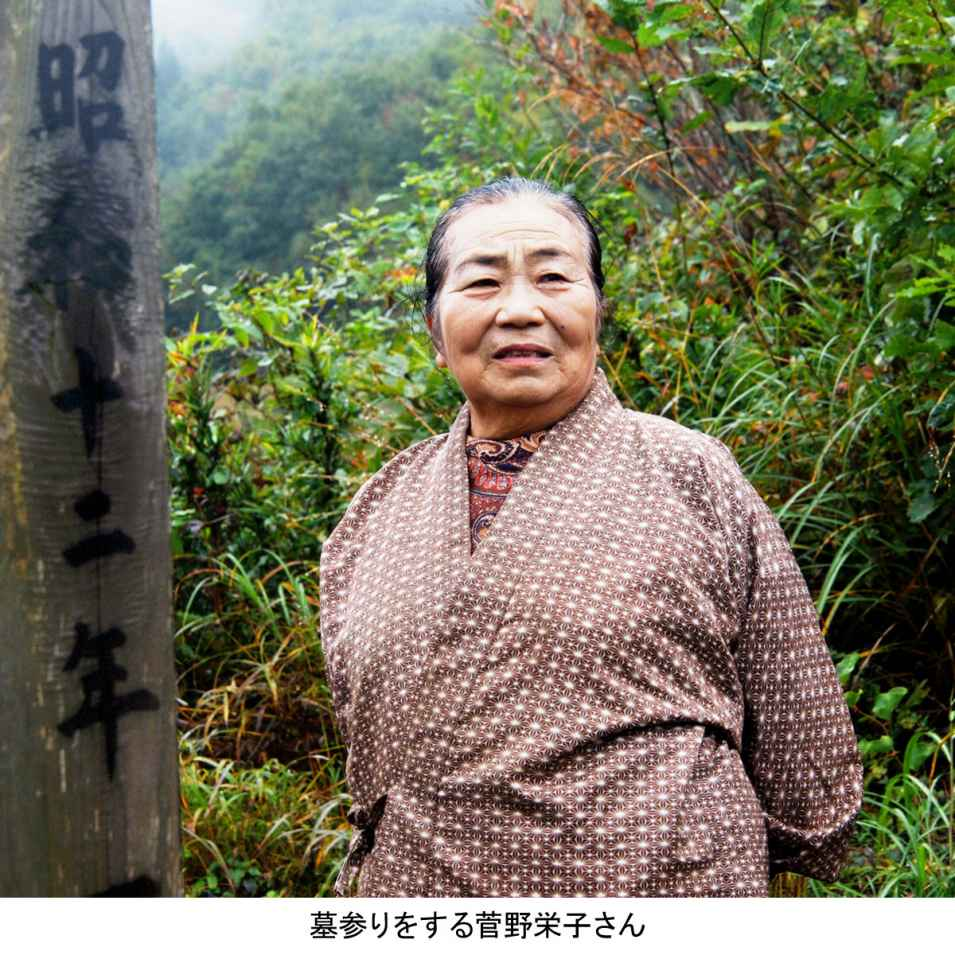
飯舘村は１１年４月、年間被曝（ひばく）線量が２０ミリシーベルトを超える恐れがあるとして、計画的避難区域に指定された。村民の避難が終わったのは約３カ月後だった。
１２年７月には、避難指示解除準備区域／居住制限区域／帰還困難区域――の三つに村が再編された。
いま村は、国による当面の除染目標を「年間５ミリシーベルト以下」とし、作業を急ぐ。
１３年１０月２５日、菅野は、村の自宅近くにある先祖の墓に参った。軽トラックを運転して約５０分。なだらかな里の山々が霧をまとっている。
「罪つくりだよ、放射能は。自然を生かした村づくりがやっと軌道に乗ってきたときに......」
墓前で菅野がつぶやいた。
「放射能への思いは、人それぞれ違う。だから、自分で情報を集めて自分で判断して生き方を決める。それしかないって私は思ってる」
「放射能で避難しなきゃ、こんなこと、しゃべんなかったけどな、あはははは」
プロメテウスの罠〔４７〕 不安を消せ！「でも高線量。避難すべきだった」
著 者 朝日新聞（上丸洋一）
発行所 朝日新聞社
〒１０４―８０１１ 東京都中央区築地５―３―２
http://www.asahi.com/
発売所 朝日新聞社デジタル本部
〒１０４―８０１１ 東京都中央区築地５―３―２
http://www.asahi.com
２０１４年６月６日 ＷＥＢ新書版発行
２０１４年６月３０日 ＥＰＵＢ版発行
©2014 The Asahi Shimbun Company
All rights reserved. No reproduction or republication without written permission.
ISBN 978-4-86526-316-9
〈ご注意〉本コンテンツは、購入者個人の閲覧目的のためのものです。私的範囲を越える利用・譲渡などは禁止します。
〈おことわり〉本コンテンツは２０１４年６月６日に刊行されたＷＥＢ新書版を底本としました。ＥＰＵＢ版の刊行にともない、体裁や表記を直した場合があります。 企業、組織などの名称、人物の役職、肩書等はいずれも記事初出当時のものです。